— 8 • 9 • 10 de Agosto de 2025 • São Paulo , SP —
SEMANA DA
CULTURA
JAPONESA
— Sabores & Tradições • Venha celebrar a culinária milenar —
sobre o festival

Uma imersão na alma japonesa
Venha vivenciar uma experiência imersiva nos sabores, rituais e tradições que moldaram a culinária japonesa por mais de mil anos. Da cerimônia do chá ao barulho vibrante dos tambores Taiko, o festival reúne cultura viva em cada esquina.
Com mais de 50 expositores, 3 dias de programação e chefs renomados de todo o Brasil, o SCJ 2025 é o maior festival de cultura japonesa da América Latina.
programação
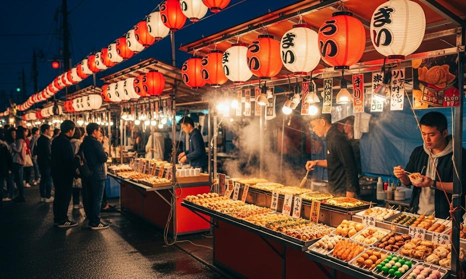
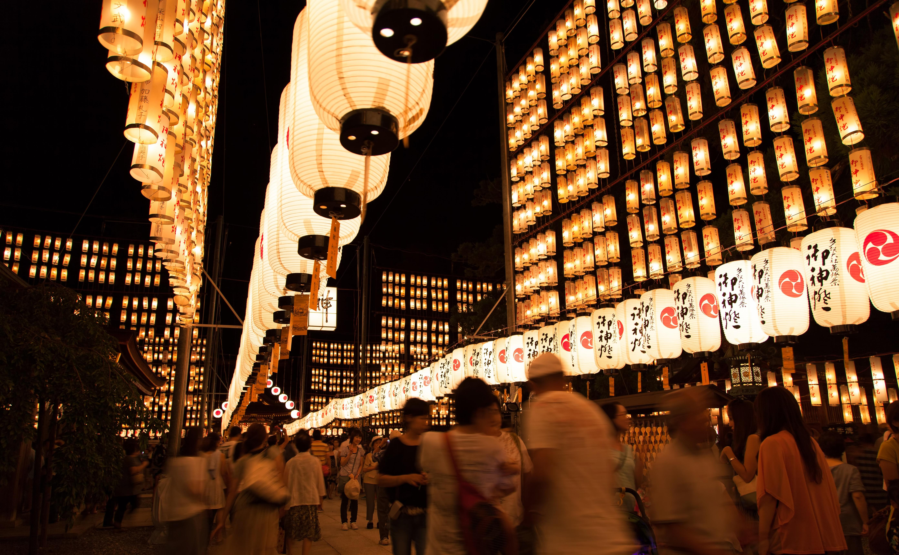
Programação do festival
3 Dias de Celebração
8 DE AGOSTO
Sexta-feira
🍙 Abertura da Praça de Alimentação — 10h00
🍜 Oficina: Introdução ao Ramen — 11h00
🍣 Festival de Sushi e Sashimi — 12h30
🎎 Exposição "História da Cultura Japonesa" — 14h00
🎋 Oficina de Caligrafia (Shodō) — 15h30
🎤 Karaokê Livre — 17h00
🥁 Apresentação de Taiko — 18h00
🍵 Cerimônia do Chá — 19h30
🎆 Abertura Oficial — 21h00
🏮 Desfile das Lanternas — 22h00
9 DE AGOSTO
Sábado
🍥 Café da Manhã Tradicional — 10h00
🎨 Oficina Infantil de Mangá — 11h00
🍛 Festival Gastronômico — 12h30
🧩 Workshop de Origami — 14h00
🎐 Oficina de Furin (Sinos dos Ventos) — 15h00
👘 Desfile de Yukatas — 16h00
🍡 Degustação de Doces Japoneses — 17h00
🥁 Show de Taiko ao Vivo — 18h30
🍜 Concurso de Ramen — 20h00
🎶 Show de Música Tradicional Japonesa — 21h30
10 DE AGOSTO
Domingo
🌸 Abertura do Jardim Cultural — 10h00
🍱 Workshop de Bentō — 11h00
🌺 Ikebana – Arte Floral — 13h00
🎮 Espaço Gamer Japonês (Nintendo & Arcade) — 14h00
⚔ Demonstração de Kendō — 15h00
🍣 Mestre do Sushi ao Vivo — 16h00
🍵 Degustação de Matcha — 17h30
🎭 Apresentação de Dança Bon Odori — 18h30
🎁 Sorteio de Brindes — 20h00
🎆 Encerramento e Show de Fogos — 21h00
cardápio
Sinta a energia e o sabor de um autêntico festival japonês.

Shio Lámen
Caldo claro com fatia de chashu e ovo
R$65.00

Combinado Premium
Seleção variada de sushis e niguiris
R$125.00

Takoyaki Clássico
13 unidades/porção petisco
R$55.00
galeria
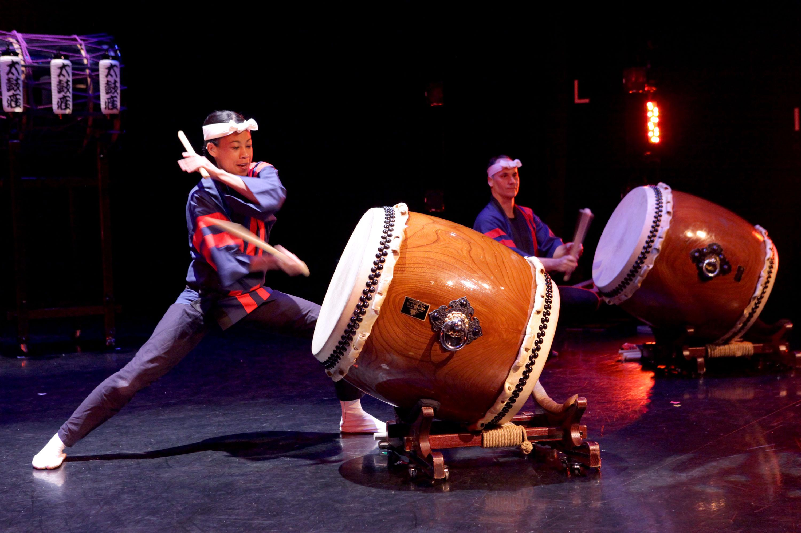
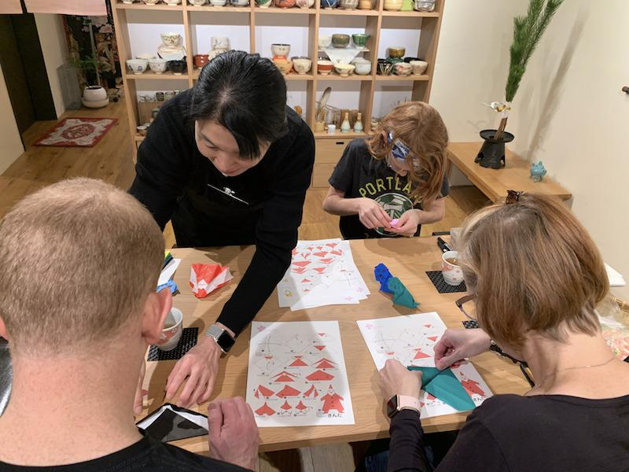
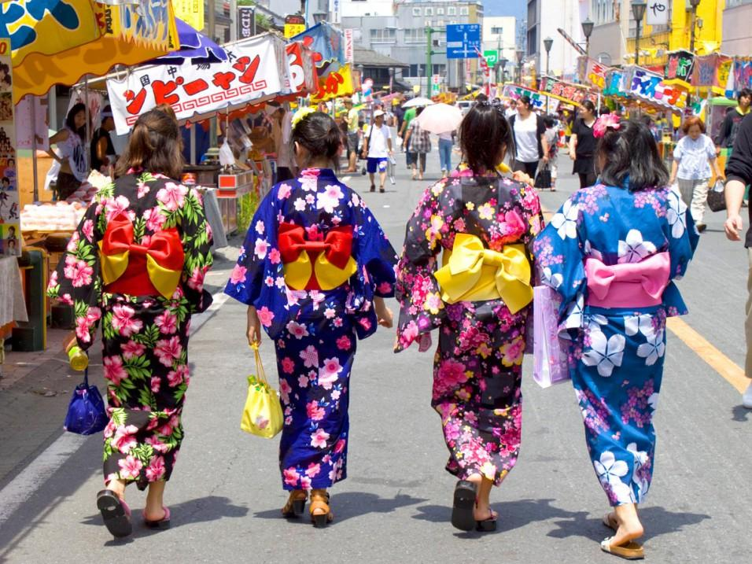
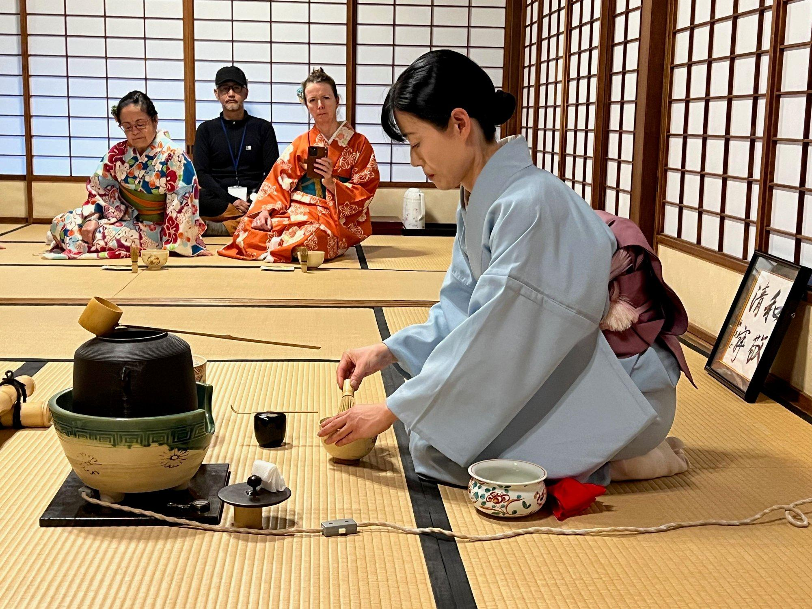
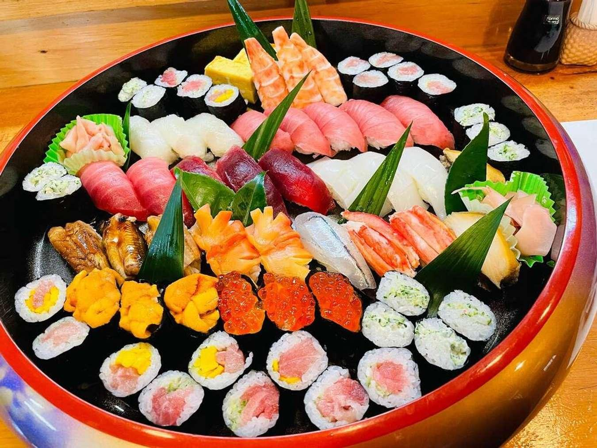
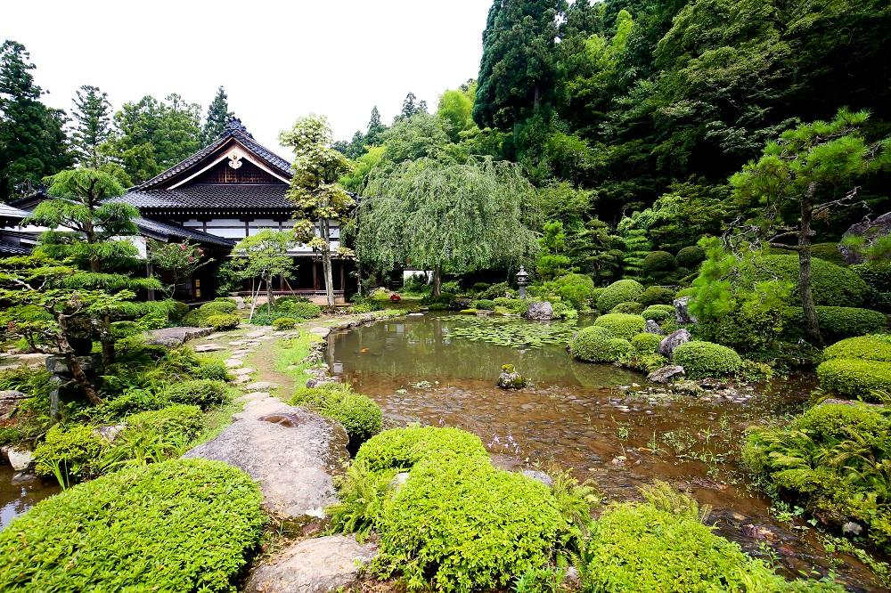
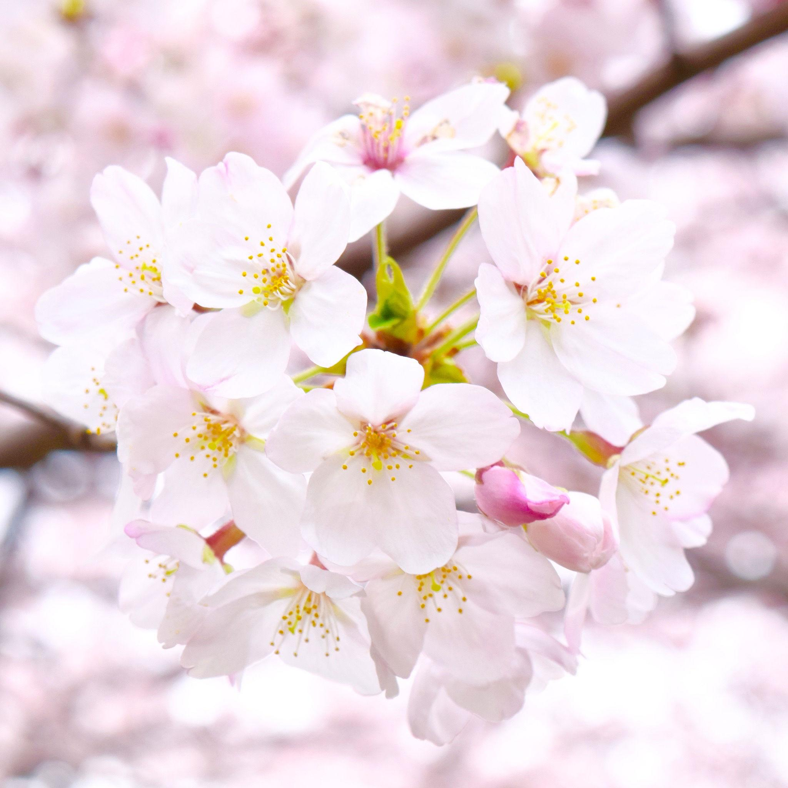
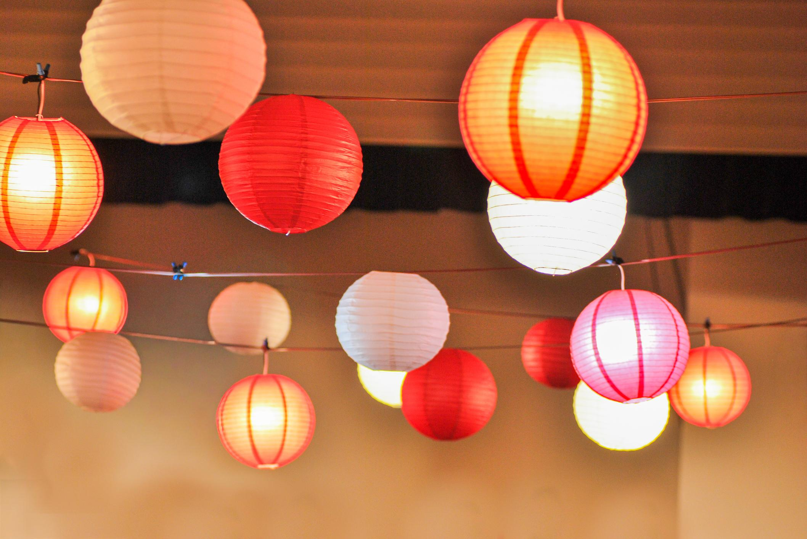
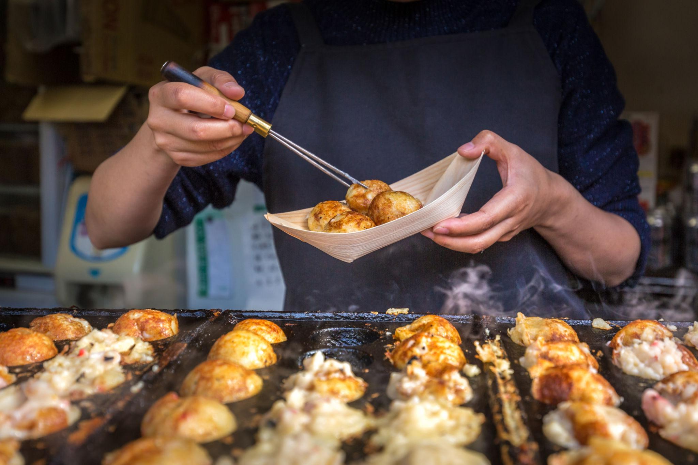
ingressos
entrada individual
Simples
R$ 45,00/dia
- Acesso a 1 dia de festival
- Programação cultural gratuita
- Mapa do evento
pacote 3 dias
Combo Matsuri
R$ 110,00/3 dias
- Acesso completo aos 3 dias
- Prioridade nas filas
- Kit exclusivo SCJ
- 2 fichas culinária
- Acesso a todos os workshops
experiência vip
Passaporte Imperial
R$ 199,00/3 dias
- Acesso VIP aos 3 dias
- Área exclusiva panorâmica
- Kit premium SCJ + yukata
- 5 fichas culinárias
- Todos os workshops inclusos
- Foto com mestres artistas